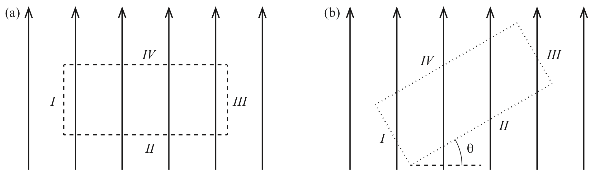
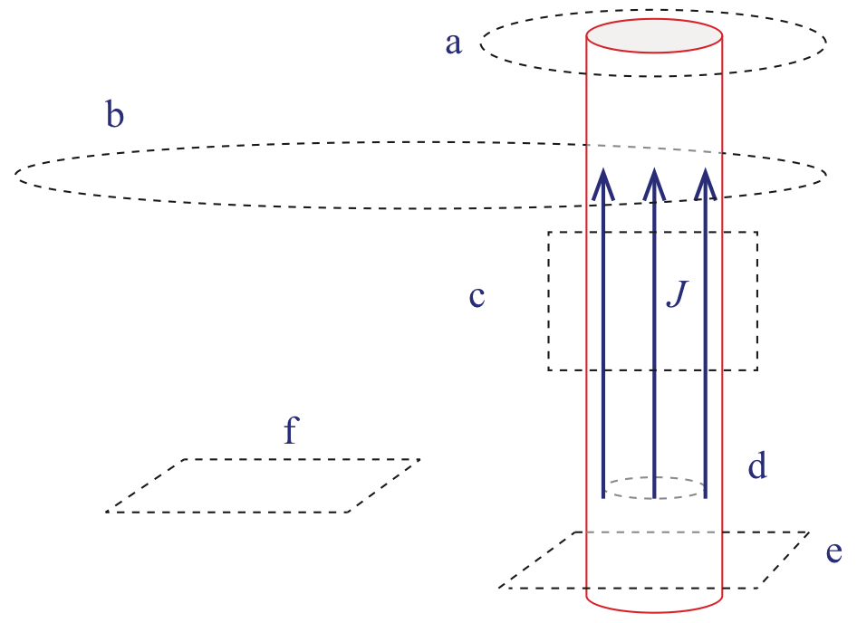
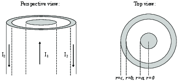
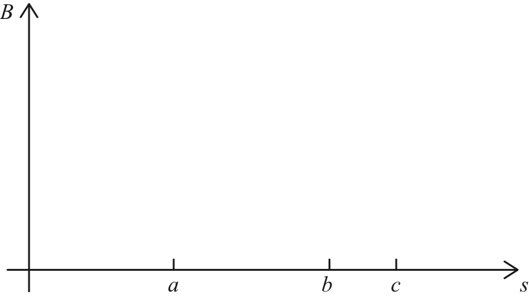
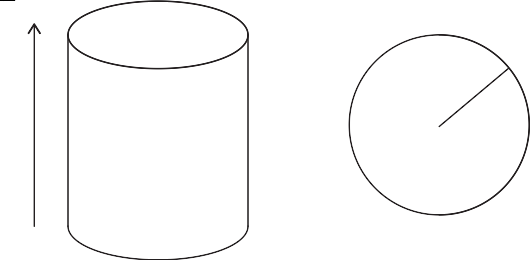
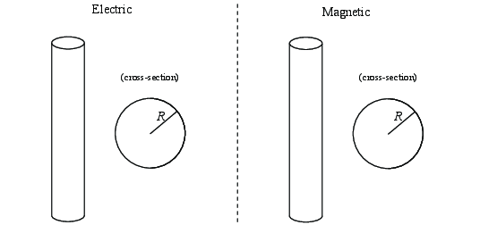
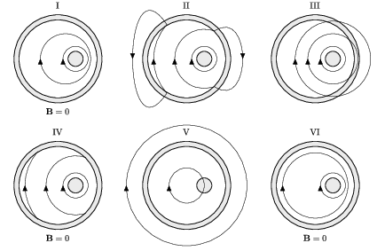
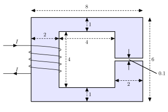

Elektrisk ladde partikler som strømmer ut fra solen kan i perioder med stor solaktivitet skape forstyrrelser i jordens magnetfelt. Hvordan kan dette skje?
Hvorfor forventer vi at permeabiliteten til et paramagnetisk materiale blir mindre ved høyere temperatur?
Else har akkurat fått seg en flott, ny sylindrisk permanent-magnet. Hun har hørt at magneten har et magnetisk felt fordi det går en netto strøm \( I \) langs overflaten av magneten. Men hun har lært i elektromagnetisme at en strøm \( I \) i et materiale med motand \( R \) gir et effekttap \( R I^2 \). Hun måler \( R \) mellom to punkter på overflaten og finner at denne ikke er null. Hvorfor blir ikke magneten da varm?
(Repetisjon av tidligere oppgave) Hans har fått en permanent magnet formet som et rektangulært, flatt prisme. Den ene halvdelen er faget rød og har bokstaven N på seg, den andre halvdelen er farget sort og har bokstaven S på seg. Hans deler magneten i to deler, en rød og en sort bit, men blir forundret da hver av bitene igjen oppfører seg som en magnet med en nordpol og en sydpol. Hvordan kan du forklare Hans dette?
(Based on a tutorial by Steven Pollock)
a) Write down Ampere's Law in integral form.
b) Imagine there is a constant magnetic field whose direction is given by the field lines shown in Fig. 10a. Find the integral \( \int \vec{B}\cdot \d\vec{l} \) for each of the four segments of the loop. What is the integral around the whole loop?
\( \int_{I}\vec{B} \cdot \d \vec{l} = -B_0 L_{I} \), \( \int_{II}\vec{B} \cdot \d \vec{l} = 0 \), \( \int_{III}\vec{B} \cdot \d \vec{l} = B_0 L_{III} \), \( \int_{IV}\vec{B} \cdot \d \vec{l} = 0 \), \( \oint_{C}\vec{B} \cdot \d \vec{l} = 0 \)
The field is given as \( \vec{B} = B_0 \y \) We find the integral for each of the segments. We integrate in positive direction according to the right hand rule.
Segment I: Along segment I, the line element \( \d \vec{l} \) is down along the \( y \)-axis and \( \d \vec{l} = -\d y \y \). The integral is therefore $$ \begin{equation} \int_I \vec{B} \cdot \d \vec{l} = \int_I B_0 \y \cdot (-\d y \y) = -\int_I B_0 \d y = - B_0 L_I \; , \tag{9.3} \end{equation} $$ where \( L_I \) is the length of segment I.
Segment II: Along segment II, the line element \( \d \vec{l} \) is along the \( x \)-axis and \( \d \vec{l} = -\d x \x \). The integral is therefore zero since the line elements are orthogonal to the magnetic field: $$ \begin{equation} \int_{II} \vec{B} \cdot \d \vec{l} = \int_{II} B_0 \y \cdot (-\d x \x) = 0 \; , \tag{9.4} \end{equation} $$
Segment III: Along segment III, the line element \( \d \vec{l} \) is along the \( y \)-axis and \( \d \vec{l} = \d y \y \). The integral is therefore: $$ \begin{equation} \int_{III} \vec{B} \cdot \d \vec{l} = \int_{III} B_0 \y \cdot (\d y \y) = \int_{III} B_0 \d y = B_0 L_{III} \; , \tag{9.5} \end{equation} $$ where \( L_{III} \) is the length along segment III.
Segment IV: Along segment IV, the line element \( \d \vec{l} \) is along the \( x \)-axis and \( \d \vec{l} = \d x \x \). The integral is therefore zero since the line elements are orthogonal to the magnetic field: $$ \begin{equation} \int_{IV} \vec{B} \cdot \d \vec{l} = \int_{IV} B_0 \y \cdot (\d x \x) = 0 \; , \tag{9.6} \end{equation} $$ The integral is the sum of the integrals along the segments: $$ \begin{eqnarray} \int_C \vec{B} \cdot \d \vec{l} &=& \int_{I} \vec{B} \cdot \d \vec{l} + int_{I} \vec{B} \cdot \d \vec{l} + int_{I} \vec{B} \cdot \d \vec{l} + int_{I} \vec{B} \cdot \d \vec{l} \\ &=& -B_0 L_{I} + 0 + B_0 L_{III} + 0 \end{eqnarray} $$ Now, since \( L_{I} = L_{III} \) the integral is zero.
Figure 10: Two integration loops in a magnetic field.

c) Discuss what would happen if you instead chose a loop that was tilted an angle \( \theta \), as illustrated with the dotted line in Fig. 10b.
The total integral will still be zero.
In this case, none of the integrals would be zero. Instead, the integrals would be along tilted line segments \( \d \vec{l} \). However, since the integral along segment I is in the opposite direction as along segment III and the megnatic field is the same everywhere (it is uniform), these integral would be identical in magnitude, but with opposite sign. The integrals along segments I and III would cancel and similarly for the integrals along segments II and IV. The total integral will still be zero.
d) Qualitatively explain how your results for questions b) and c) would change if your Amperian loop was a circle instead of a rectangle. Why is a rectangular Amperian loop better for this problem than a circular Amperian loop? Explain. What sort of situation might you want a circular Amperian loop for and why? Be explicit.
First, if the amperian loop was a circle, there would be no difference if we rotated the circle by an angle \( \theta \). The results would therefore be the same for the original and the tilted circle.
Second, for a circle we could still argue that for every \( \d \vec{l} \) somewhere along the curve there would be an opposite line segment \( - \d \vec{l} \) on the other side of the circle. So if the magnetic field is zero, the contributions from \( \vec{B} \cdot \d \vec{l} \) and \( \vec{B} \cdot (-\d \vec{l}) \) would cancel and the integral along the whole, closed circle would be zero.
e) If \( \oint_c \vec{B} \cdot d \vec{l} = 0 \) for an Amperian loop (not necessarily the one in the questions above), can you conclude anything about the magnetic field \( \vec{B} \)? Explain.
No. We would need to know more about the magnetic field, such as its symmetries, to be able to conclude about the magnetic field.
f) What does it mean if \( \oint_c \vec{B} \cdot d \vec{l} \) is not zero?
g) Consider the long fat cylindrical wire with a known, azimuthally symmetric current density \( \vec{J} \) shown in Fig. 11. Look at the various loops shown in the figure, and decide what information, if any, Ampere's law applied to each loop might provide about \( \vec{B} \). (i) Loop a (it is centered on the wire); (ii) loop b; (iii) loop c; (iv) loop d (also centered); (v) loop e (also centered); loop f.
Figure 11: Various integrations loops and a current density \( \vec{J} \).

While studying intensely for your physics final, you decide to take a break and listen to your stereo. As you unwind to a little music from your favourite Spotify list, your thoughts drift to newspaper stories about the dangers of household magnetic fields on the body. You examine your stereo wires and find that most of them are coaxial cables: essentially one conducting cylinder surrounded by a thin conducting cylindrical shell (the shell has some thickness). At some moment in time current is traveling up the inside conductor, and back down the conducting shell. As a way to practice for your physics final you decide to calculate the magnetic field at different radii.
Figure 12:

a) How does the current density \( \vec{J} \) vary throughout the body of a conducting wire? Is all the current concentrated right at the center of the wire, does it only flow on the outer edges, or, does it spread out uniformly across the cross-sectional area?
Uniform.
We assume that the current is uniformly distributed across the cross-sectional areas so that \( \vec{J} \) is uniform in the inner cable and in the outer cable. (But is it not necessarily the same magnitude in the inner and outer cables).
Now, using your model for \( \vec{J} \), calculate \( \vec{B} \) in the four regions (you may assume \( I_1 \) and \( I_2 \) have the same magnitude \( I \)):
b) \( s < a \)
\( B_{\phi} = \frac{\mu_0 I r}{2 \pi a^2} \)
We assume that the magnetic field has cylindrical symmetry around an axis thorugh the center of the cylinder. This means that the field cannot depend on \( \phi \). Also, we assume that the system is infinitely (or very) long. We therefore do not expect the field to depend on \( z \). Since the current is in the \( z \)-direction, Biot-Savarts law implies that the magnetic field cannot have a component in the \( z \) direction. We also know that since the divergece of the magnetic field is zero, the magnetic field cannot have a component in the \( r \)-direction. This means that $$ \begin{equation} \vec{B} = B_{\phi}(r) \; . \tag{9.7} \end{equation} $$ Given the cylindrical symmetry, we choose an Amperian loop in the form of a circle around the \( z \)-axis in the \( xy \)-plane. Amperes law is then $$ \begin{equation} \int_C \vec{B} \cdot \d \vec{l} = 2 \pi r B_{\phi} = \mu_0 I(r) = \mu_0 \int_S \vec{J} \cdot \d \vec{S} \; , \tag{9.8} \end{equation} $$ where the surface \( S \) has an area \( \pi r^2 \). The current density is uniform, \( \vec{J} = I/(\pi a^2) \z \) in this region (\( r < a \)). The integral on the right is therefore \( \pi r^2 I/(\pi a^2) \) and $$ \begin{equation} \int_C \vec{B} \cdot \d \vec{l} = 2 \pi r B_{\phi} = \int_S \vec{J} \cdot \d \vec{S} = I \frac{r^2}{a^2} \; , \tag{9.9} \end{equation} $$ which gives $$ \begin{equation} B_{\phi} = \mu_0 I \frac{r^2}{2 \pi r a^2} = \frac{\mu_0 I r}{2 \pi a^2} \; . \tag{9.10} \end{equation} $$
c) \( a < s < b \)
\( B_{\phi} = \frac{\mu_0 I}{2 \pi r} \)
We use the same approach as above. Now, the current inside the Amperian loop is \( I \). The magnetic field is therefore found from Ampere's law: $$ \begin{equation} \int_C \vec{B} \cdot \d \vec{l} = 2 \pi r B_{\phi} = \mu_0 I \; , \tag{9.11} \end{equation} $$ which gives $$ \begin{equation} B_{\phi} = \frac{\mu_0 I}{2 \pi r} \; . \tag{9.12} \end{equation} $$
d) \( b < s < c \)
\( B_{\phi} = -\frac{\mu_0 I}{2 \pi r} \frac{r^2 - b^2}{c^2 - b^2} + \frac{\mu_0 I}{2 \pi r} \)
The procedure follows the same approach as above, but we now need to include all the current flowing inside the Amperian loop. This includes both the current \( I \) and the current flowing in the outer cylinder inside a radius \( r \). The area inside a radius \( r \) is \( A(r) = \pi r^2 - \pi b^2 \) and the current density in this region is \( J = -I/(\pi c^2 - \pi b^2) \). Ampere's law therefore gives: $$ \begin{equation} \int_C \vec{B} \cdot \d \vec{l} = 2 \pi r B_{\phi} = \mu_0 I(r) = -\mu_0 I \frac{\pi r^2 - \pi b^2}{\pi c^2 - \pi b^2} + \mu_0 I \; . \tag{9.13} \end{equation} $$ This gives: $$ \begin{equation} B_{\phi} = -\frac{\mu_0 I}{2 \pi r} \frac{r^2 - b^2}{c^2 - b^2} + \frac{\mu_0 I}{2 \pi r} \; . \tag{9.14} \end{equation} $$
e) \( s > c \)
\( B_{\phi} = 0 \)
In this case, the net current inside the Amperian loop is zero and the field is zero.
f) Based on your calculations, sketch a qualitative graph of \( B \).

g) If \( I \) is 1 Amp (not an unreasonable size), what is the maximum value of \( B \) produced? Where is that maximum B produced? What is \( B \) at your location in the room? At either of these places, how does it compare with the earth's magnetic field (about \( 5 \times 10^{-5} \) T)? What do you think about the newspaper's concerns? You may find the following number useful: \( \mu_0 = 4 \pi \times 10^{-7} \text{N/A}^2 \).
Vi har et langt sylinderskall med radius \( a \) og flateladningstetthet \( \rho_s \). Denne sylinderen roterer med vinkelhastighet \( \omega \)
a) Hvilke symmetrier har vi i dette systemet? Hva kan vi si om det magnetiske feltet basert på disse symmetriene?
Vi har translasjonssymmetri langs \( z \)-aksen. Vi har roasjonssymmetri om \( z-aksen \). Dette fører til at feltet er uanhengig av \( z \), og at størrelsen på feltet kun avhenger av \( r \), avstanden from sylinderaksen.
b) Dersom du skal bruke Amperes lov til å finne det magnetiske feltet fra sylinderen. Hva vil være et godt valg av Ampèreløkke?
Når sylinderen roterer med en ladningsfordeling på seg kan man se på det som en strøm.
Vi ønsker oss en løkke der vi har stykkevis konstante bidrag i linjeintegralet slik at vi kan kvitte oss med integraltegnet. Det kan vi oppnå for eksempel ved å velge en løkke som går parallellt med sylinderaksen, deretter radielt ut fra sylinderaksen ut til uendeligheten, deretter tilbake igjen parallellt med sylinderaksen ute i uendeligheten, og så radielt inn igjen til startpunktet.
Vi kan umiddelbart se at \( B \) ikke kan ha noen radiell komponent. Da måtte \( \nabla \cdot \mathbf{B} \neq 0 \). Derfor har vi kun e \( z \)-komponent av \( B \)-feltet. Når vi tar med oss trajslasjonssymmetrien i systemet ser vi at \( \mathbf{B} \cdot \d \mathbf{l} \) kommer til å være konstant lik \( B_z \d l \) parallellt med sylinderaksen på innsiden av sylinderskallet, og null langs alle de andre delene av ampereløkka. For veien ut og inn er det fordi feltet står normalt, og i uendeligheten er det fordi feltet blir null.
c) Finn magnetfeltet (størrelse og retning) fra det roterende sylinderskallet.
Vi begynner med å finn strømtettheten som settes opp av den roterende sylinderen: $$ \begin{equation} \mathbf{J}_l = \rho_s (\boldsymbol{\omega}\times \mathbf{r}) \tag{9.15} \end{equation} $$
Vi setter opp Ampères lov: $$ \begin{align} \oint_C \mathbf{B} \cdot \d \mathbf{l} = \int_l \mathbf{J} \cdot \d \mathbf{l} \tag{9.16} \end{align} $$
In this tutorial we will focus on the relation between the external field \( \vec{B}_0 \), the magnetization, \( \vec{M} \), and the \( \vec{H} \)-field.
A cylindrically shaped linearly magnetic material with magnetic susceptibility \( \xi_m \) is placed in an external, homogeneous magnetic field \( \vec{B}_0 \). The axis of the cylinder is directed along the magnetic field as illustrated in the figure. You can assume that the magnetic field is homogeneous and parallel to \( \vec{B}_0 \) inside the cylinder.

a) What is \( \vec{H} \) outside the cylinder?
Outside the cylinder the magnetic permeability if \( \mu_0 \). Hence, \( \vec{B}_0 = \mu_0 \vec{H} \), and \( \vec{H} = \vec{B}_0/\mu_0 \).
b) Write down Ampere's law for a magnetic material.
c) What type of Amperian loop would you choose to find \( \vec{H} \) inside the cylinder.
A loop that goes up parallel to the axis inside the cylinder and down parallel to the axis outside the cylinder.
d) What is \( \vec{H} \) inside the cylinder?
We apply Ampere's law. There are no free currents. The only contributions to the integral are from the two paths along the axis. The other two paths do not contribute, since the \( \vec{H} \)-field is directed along the axis. We get $$ \begin{equation} H \Delta l - (B_0/\mu_0) \Delta l = 0 \, \Rightarrow \, H = B_0/\mu_0 \; . \tag{9.18} \end{equation} $$
e) Check that your result is consistent with the boundary conditions at the boundary between the cylinder and the vacuum outside.
\( \vec{H} \) is the same on both sides. There is no normal component of either \( \vec{H} \) or \( \vec{B} \) on either side.
f) What is \( \vec{M} \) inside the cylinder for a diamagnetic and a paramagnetic material?
\( \vec{M} = \chi_m \vec{H} = \chi_m \vec{B}_0/\mu_0 \) where the sign depends on the sign of \( \chi_m \).
g) What is the magnetic field \( \vec{B} \) inside the cylinder for a diamagnetic and a paramagnetic material?
The magnetic field \( \vec{B} = \mu \vec{H} = (\mu/\mu_0) \vec{B}_0 = (1+\chi_m) \vec{B}_0 \). The results therefore depend on the sign of \( \chi_m \). For a diamagnetic material \( \chi_m < 0 \) and \( B \) is smaller than \( B_0 \). For a paramagnetic material \( \chi_m>0 \) and \( B \) is larger than \( B_0 \).
h) How would you argue that the magnetic fields are homogeneous inside the cylinder?
Vi skal i denne oppgaven se på magnetfeltet fra en strømførende plate med endelig tykkelse. Platen er uendelig stor i \( x \)- og \( y \)-retning og strekker seg fra \( -h \) til \( +h \) i \( z \)-retningen. Platen har en strømtetthet \( \vec{J} = J_0 |z| \x \) for \( z \in (-h,h) \) og \( 0 \) ellers (utenfor platen). (Hvis du synes dette blir for vanskelig, er det også greit å regne med uniform strømtetthet \( \vec{J} = J_0\x \) inne i platen og null strømtetthet utenfor platen).
a) Hvorfor kan ikke \( \vec{B} \)-feltet ha en komponent i \( x \)-retningen?
b) Hvilken symmetrier finner du at \( \vec{B} \) har?
c) Hvorfor kan ikke \( \vec{B} \)-feltet ha en komponent i \( z \)-retningen?
d) Finn \( \vec{B} \)-feltet overalt i rommet (over, under og inni platen).
Denne oppgaven er laget slik at den vil likne på oppgaver dere kan få på 4-timers skole-eksamen med Jupyter notebooks. Det er derfor lurt å løse den i en Jupyter notebook, men vi anbefaler å levere som pdf. De siste programmeringsoppgaven er kanskje noe vanskeligere enn vi forventer på eksamen. Mengden og typen på oppgitt kode på eksamen er også realistisk i forhold til eksamen. Lykke til!
Vi skal i denne oppgaven se på en kvadratisk strøm-løkke --- slik du vil finne i de fleste kretser man lager på kretskort. Strøm-løkken er kvadratisk med sidekanter \( a \) og ligger i \( xy \)-planet som skissert i figuren. Planen er å først se på magnetfeltet fra ett linjestykke og stå legge sammen feltene fra alle de fire linjestykkene.
a) Hva er det magnetiske feltet fra en uendelig lang linje langs \( x \)-aksen med en strøm \( I \) i positiv \( x \)-retning. Finn feltet, \( \vec{B} \), i et punkt \( (x,y,0) \)
b) Vi ser så på en linje langs \( x \)-aksen fra \( x=-a/2 \) til \( x = a/2 \). Det går en strøm \( I \) i positiv \( x \)-retning. Hva er bidraget \( \d \vec{B} \) til det magnetiske feltet i punktet \( (0,y,0) \) fra et strøm-element \( I \d \vec{l} \) i punktet \( (x',0,0) \)?
c) Løs integralet for å finne det magnetiske feltet i punktet \( (0,y,0) \) fra en linje fra \( -a/2 \) til \( a/2 \).
Som grunnlag for den numeriske løsningen får du oppgitt følgende program som finner det magnetiske feltet langs \( z \)-aksen fra en sirkulær krets i \( xy \)-planet.
import numpy as np
import matplotlib.pyplot as plt
# Example: B-field from a circle
mu0 = 1.257e-6
K = mu0/(4*np.pi)
def Bcircle(r,a,I,N):
B = np.array([0,0,0])
Idl = I*a*2*np.pi/N
for j in range(N):
theta = (j/N)*2*np.pi
rj = np.array([a*np.cos(theta),a*np.sin(theta),0])
dlvec = np.array([-np.sin(theta),np.cos(theta),0])
R = r-rj
dB = K*Idl*np.cross(dlvec,R)/np.linalg.norm(R)**3
B = B + dB
return B
a = 0.1 # Radius til sirkel (m)
I = 1.0 # Strøm i sirkel (A)
N = 100 # Antall punkter i plot
L = 0.3 # Lengde på område for plot
z = np.zeros((N,1))
B = np.zeros((N,3))
for iz in range(N):
ziz = (L/N)*iz
r = np.array([0,0,ziz])
z[iz] = ziz
B[iz] = Bcircle(r,a,I,30)
plt.plot(z,B[:,2]*1e6)
plt.xlabel('$z$ (m)')
plt.ylabel('$B_z$ ($\mu$T)')
Vi skal nå sammenlikne med en numerisk løsning for det magnetiske feltet rundt et linjestykke langs \( x \)-aksen fra \( -a/2 \) til \( a/2 \).
d) Skriv et program som finner det magnetiske feltet fra strømmen \( I \) langs en linje som starter i punktet \( \vec{a}_0 \) og går til punktet \( \vec{a}_0 + \Delta \vec{a} \).
e) Bruk programmet til å finne det magnetiske feltet fra strømmen \( I \) langs en linje fra \( -a/2 \) til \( a/2 \) langs \( x \)-aksen. Regn ut feltet lange en linje parallelt med \( x \)-aksen gjennom \( (0,a/10,0) \) og sammenlikn med resultatene både fra et endelig linjestykke og fra den uendelig lange lederen. Du bør sammenlikne ved å plotte det numeriske resultatet og de teoretiske resultatene i samme plot.
In this tutorial we will focus on the commonalities in the approaches to find the electric field using Gauss' law for a dielectric and to find the magnetic field using Ampere's law for a magnetizable material.
We will study an infinitely long cylinder of radius \( a \) in two scenarios. In scenario A the cylinder has a constant charge density \( \rho \) and consists of a dielectric material with dielectric constant \( \epsilon \), while the space outside the cylinder is vacuum. In scenario B the cylinder has a constant current density \( \vec{J} \) directed along the axis of the cylinder with a magnetic permeability \( \mu \), while the space outside the cylinder is vacuum.

a) Write down Gauss' and Ampere's laws.
Gauss' law: $$ \begin{equation} \oint_S \vec{D}\cdot d\vec{S} = Q_{\text{free}} \; . \tag{9.19} \end{equation} $$ Ampere's law (in the stationary case): $$ \begin{equation} \oint_C \vec{H} \cdot d\vec{l} = \int_S \vec{J}_{\text{free}} \cdot d\vec{S} \; . \tag{9.20} \end{equation} $$
First, we will address the fields \( \vec{D} \) (scenario A) and \( \vec{H} \) (scenario B) outside the cylinder.
b) What symmetries would you use to apply Gauss' law to scenario A? What is the free charge? Find the field \( \vec{D} \).
\( Q = v \rho = \pi a^2 L \rho \), \( \vec{D} = \frac{\rho a^2}{2 r} \rhat \)
We notice that we have rotation and translation symmetry, therefore we can use cylindrical coordinates. We do not expect the field to have a \( \phi \)-dependence due to the rotational symmetry or a \( z \)-dependence due to the translational symmetry.
What about the components? We do not expect the field to have a \( z \)-component because we can rotate the system \( 180^{\circ} \) and get the same system back. The \( \vec{D} \)-field has the same symmetry as the electric field \( \vec{E} \). We do not exect the \( \vec{E} \)-field to have a \( \phi \)-component because \( \oint \vec{E} \cdot \d \vec{l} = 0 \). We therefore expect \( \vec{E} = E_r(r)\rhat \) and therefore \( \vec{D} = D_r(r) \rhat \).
We will use Gauss' law on a cylinder with radius \( r \). What is the free charge inside such a cylinder? If \( r > a \), the charge inside is the volume of the cylinder times the volume charge density, which is \( Q = v \rho = \pi a^2 L \rho \). If \( r < a \), the charge inside the volume of the cylinder times the volume charge density, which in this case is \( Q = v \rho = \pi r^2 L \rho \).
Now, we apply Gauss' law to a cylinder of radius \( r \) where \( r > a \): $$ \begin{equation} \int_S \vec{D} \cdot \d \vec{S} = Q_{\text{free}} = \pi a^2 L \rho \; . \tag{9.21} \end{equation} $$ There is no flux into or out of the top and bottom planar surfaces, because the field has no \( z \)-component. For the curved cylinder syrface \( \vec{D} \) points in the same direction as the surface normal and \( \vec{D} \cdot \rhat \) is constant in the integral because \( \vec{D} \) only depends on \( r \): $$ \begin{equation} \int_S \vec{D} \cdot \d \vec{S} = D_r(r) 2 \pi r L = \pi a^2 L \rho \; , \tag{9.22} \end{equation} $$ which gives $$ \begin{equation} D_r = \frac{\rho a^2}{2r} \tag{9.23} \end{equation} $$ and $$ \begin{equation} \vec{D} = \frac{\rho a^2}{2 r} \rhat \; . \tag{9.24} \end{equation} $$
c) What symmetries would you use to apply Ampere's law to scenario B? What is the free current? Find the field \( \vec{H} \).
We have the same symmetries as the previous exercise, but because the magnetic field can't have divergence we know it will point in \( \phi \)-direction. The free current is given by the current density, and we get the field: $$ \begin{equation*} \vec{H}(r) = \frac{1}{2}\frac{a^2}{r}|\vec{J}|phihat \end{equation*} $$
Second, we will address the fields \( \vec{D} \) (scenario A) and \( \vec{H} \) (scenario B) inside the cylinder.
d) What symmetries would you use to apply Gauss' law to scenario A? What is the free charge? Find the field \( \vec{D} \).
The arguments are the same as in the part (b), but we now use the charge inside a cylinder of radius \( r \), where \( r < a \): \( Q = v \rho = \pi r^2 L \rho \). We apply Gauss' law and get: $$ \begin{equation} \int_S \vec{D} \cdot \d \vec{S} = D_r(r) 2 \pi r L = \pi r^2 L \rho \; , \tag{9.25} \end{equation} $$ which gives $$ \begin{equation} D_r = \frac{\rho r}{2} \tag{9.26} \end{equation} $$ and $$ \begin{equation} \vec{D} = \frac{\rho r}{2} \rhat \; . \tag{9.27} \end{equation} $$
e) What symmetries would you use to apply Ampere's law to scenario B? What is the free current? Find the field \( \vec{H} \).
I denne oppgaven skal vi finne feltet fra en koaksialkabel. Dersom du har gjort tilsvarende oppgave fra ukens tutorial kan du gå rett til deloppgave d.
a) Finn \( B \)-feltet fra en uendelig lang, rett, sylindrisk, leder med radius \( a \) når du antar at en strøm \( I \) er jevnt fordelt over lederens tverrsnitt.
Symmetrien i systemet tilsier at feltet må være \( \mathbf{B} = B(r) \hat{\boldsymbol{\phi}} \). Det kommer av rotasjonssymmetri om sylinderens akse, og translasjonssymmetri langs sylinderens akse, samt at \( \nabla \cdot \mathbf{B} = 0 \). Vi legger derfor en Ampèresløyfe som er en sirkel normalt på sylinderaksen. $$ \begin{align} \oint_C \mathbf{B} \cdot \d \mathbf{l} = \mu_0 \int_S \mathbf{J} \cdot \d \mathbf{S} \tag{9.28}\\ 2\pi r B(r) = \frac{\mu_0 Ir^2}{a^2} \tag{9.29}\\ B(r) = \frac{\mu_0 Ir}{2\pi a^2} \tag{9.30}\\ \mathbf{B}(r) = \frac{\mu_0Ir}{2\pi a^2}\hat{\boldsymbol{\phi}} \tag{9.31} \end{align} $$ for \( r \in [0, a] \).
For \( r > a \) har vi en fast innesluttet strøm \( I \), slik at \( B \)-feltet blir \( \mathbf{B}(r) = \frac{\mu_0 I}{2\pi r}\hat{\boldsymbol{\phi}} \)
b) Finn \( B \)-feltet fra et uendelig langt sylinderskall med indre radius \( b \) og ytre radius \( c \) når det går en strøm \( I \) som er jevnt fordelt over lederens tverrsnitt.
Vi bruker samme Ampèresløyfe som i forrige oppgave. Andelen strøm som er innesluttet i en avstand \( r \in [b, c] \) er \( \frac{\pi (r^2-b^2)}{\pi (c^2 - b^2)} = \frac{r^2-b^2}{c^2 - b^2} \), slik at \( I_{encl} = I\frac{r^2-b^2}{c^2 - b^2} \). $$ \begin{align} \oint_C \mathbf{B} \cdot \d \mathbf{l} = \mu_0 \int_S \mathbf{J} \cdot \d \mathbf{S} \tag{9.32}\\ 2\pi r B(r) = \mu_0 I\frac{r^2-b^2}{c^2 - b^2} \tag{9.33}\\ \mathbf{B}(r) = \mu_0 I\frac{r^2-b^2}{2\pi r(c^2 - b^2)} \hat{\boldsymbol{\phi}} \tag{9.34} \end{align} $$ For \( r > c \) har vi fast innesluttet strøm \( I \), slik at \( \mathbf{B}(r) = \frac{\mu_0 I}{2\pi r}\hat{\boldsymbol{\phi}} \). For \( r < b \) har vi ingen innesluttet strøm. Når vi legger på det vi vet om symmetriene i systemet vet vi da at feltet der inne på være \( \mathbf{0} \).
c) Finn B-feltet fra en koaksialkabel der innerlederen har radius \( a \) og ytterlederen har indre radius \( b \) og ytre radius \( c \). Det går en strøm \( I \) i innerlederen, og en strøm \( I \) i ytterlederen. Begge strømmene er jevt fordelt over kabelens respektive tverrsnitt. (Finn feltet i alle avstander \( r > 0 \))
Vi har funnet feltet fra hver enkelt av lederene i koaksialkabelen i de forrige deloppgavene. Nå trenger vi kun å sette dem sammen. Vi setter strømretningen i den indre lederen til å være positiv. Om vi kaller feltet i oppgave (a) for \( \mathbf{B}_{indre} \) og feltet fra (b) for \( \mathbf{B}_{ytre} \), så skal det totale feltet, ved superposisjon, være $$ \begin{equation} \mathbf{B}(r) = \mathbf{B}_{indre} - \mathbf{B}_{indre} \tag{9.35} \end{equation} $$ der det negative fortegnet kommer av at det er motsatt strømretning i denne oppgaven sammenlignet med i oppgave b. Vi deler dette opp i 4 regioner: \( r < a \), \( r \in (a, b) \) og \( r \in [b, c] \) og \( r > c \): $$ \begin{align} \mathbf{B}(r) = \left\{ \begin{array}{cc} \frac{\mu_0 I r}{2\pi a^2} \hat{\boldsymbol{\phi}} & \text{ for } r < a \\ \frac{\mu_0 I}{2\pi r} \hat{\boldsymbol{\phi}} & \text{ for } r\in (a, b) \\ I\frac{r^2-b^2}{2\pi(c^2 - b^2)} \hat{\boldsymbol{\phi}} & \text{ for } r\in(b, c) \\ \mathbf{0} & \text{ for } r > c \end{array} \right. \tag{9.36} \end{align}$$
d)
Anta nå at lederene forskyves slik at de blir liggende eksentrisk. Vi antar fortsatt at strømmen begge veier fordeler seg jevnt over henholdsvis inner- og ytterlederen. Figuren under viser seks forslag til grove skisser av det totale magnetiske feltet. Hvilken skisse er korrekt? Du kan gjerne begrunne svaret ved å vise at de resterende fem alternativene er umulige.

Gitt en lang, tettviklet solenoide med totalt N viklinger på lengden \( l \). Viklingene fører strømmen \( I \). Finn den magnetiske flukstettheten \( \mathbf{B} \) inne i solenoiden dersom
a) Solenoiden er en papirrull med relativ permeabilitet \( \mu_r \approx 1 \).
b) Solenoiden består av en jernkjerne med \( \mu_r = 5000 \).
Bruk Ampères lov. Symmetriargumentet for en solenoide kan du ta for gitt, dvs. du kan anta at feltet er i \( \z \)-retning (langs aksen), og at det er neglisjerbart utenfor solenoiden.
(Fra Johannes Skaar)

Figuren over viser en jernkjerne med alle mål gitt i cm. Kjernens tykkelse (vinkelrett på papirplanet) er \( 1 \) cm. Anta at den magnetiske flukstettheten \( \mathbf{B} \) er jevnt fordelt over alle tverrsnittsareal \( S \) av kjernen, slik at \( \Phi = \int_S \mathbf{B} \cdot \d \mathbf{S} = BS \). Kjernen har en relativ permeabilitet på \( 5000 \). Det er \( N=100 \) viklinger, og strømmen \( I \) er \( 1 \) mA.
a) Anta at fluksen er konstant gjennom kretsen, dvs. se bort fra spredning av flukslinjer. Bruk Ampères lov til å vise at for denne magnetiske kretsen får vi fluksen $$ \begin{equation} \Phi_m = \frac{NI}{\sum_i R_{mi}}, \tag{9.37} \end{equation} $$ der \( R_{mi} \) er reluktansen til del \( i \) i kretsen, definert som $$ \begin{equation} R_{mi} = \frac{l_i}{\mu_i S_i}. \tag{9.38} \end{equation} $$ Her er \( l_i \), \( \mu_i \), og \( S_i \) henholdsvis lengden, permeabiliteten og tverrsnittsarealet til den \( i'te \) delen av kretsen. La integrasjonsveien være i midten av jernkjernen, slik at for eksempel den øverste delen av kretsen får lengden \( 6 \) cm og ikk \( 8 \) cm.
Fluksen er den samme gjennom alle deler av kretsen. La oss indekseree størrelsene med \( i \) for å representere delkrets \( i \). Da har vi \( \Phi_m = B_1S_1 = B_2S_2 = \cdots = B_nS_n \), så \( \Phi = B_iS_i \) for \( i = 1, 2, ..., n \). Amperes lov gir oss $$ \begin{equation} \oint_C \boldsymbol{H}\cdot d\boldsymbol{l} = NI, \tag{9.39} \end{equation} $$ og venstre siden kan omskrives slik: $$ \begin{equation} \begin{split} \oint_C \boldsymbol{H}\cdot d\boldsymbol{l} & = \sum_i \int_{C_i}\boldsymbol{H}\cdot d\boldsymbol{l} = \sum_i H_i l_i \\ & = \sum_i \frac{l_i}{\mu_i}B_i = \frac{l_i}{\mu_i S_i}\underbrace{B_i S_i}_{=\Phi_m} = \Phi_m\sum_i\underbrace{\frac{l_i}{\mu_i S_i}}_{R_{mi}}. \end{split} \tag{9.40} \end{equation} $$ Setter vi dette inn i Amperes lov får vi $$ \begin{equation} \Phi_m\sum_iR_{mi} = NI, \tag{9.41} \end{equation} $$ som medfører $$ \begin{equation} \Phi_m=\frac{NI}{\sum_iR_{mi} }, \tag{9.42} \end{equation} $$ som var det vi skulle vise.
b) Finn tallsvar for den magnetiske fluksen \( \Phi_m \) gjennom jernkjernen.
\( 2.36 \cdot 10^{-8} \) Wb
c) Hvor stor feil gjør vi om vi regner med uendelig relativ permeabilitet i jernkjernen?
7% feil.